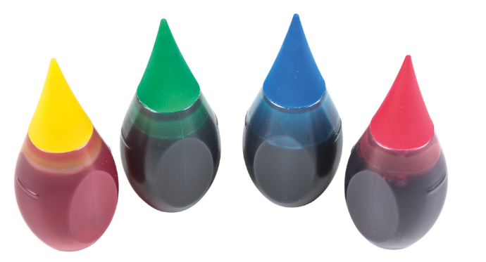
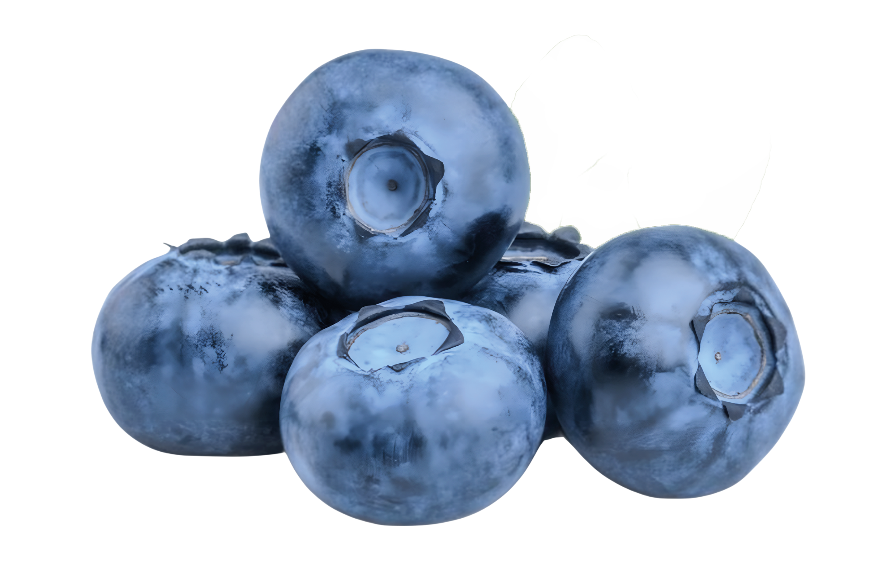

il colore
nel food
sta
c
a
m
b
i
a
n
d
o
le nuove alternative ai sintetici
oggi pesa sempre di più l'origine
Per anni la scelta dei
coloranti è stata
guidata soprattutto
da
stabilità
,
intensità
e
costo
.

Le alternative
al sintetico
Barbabietola
,
curcuma
,
spirulina
,
antociani
e
bioprocessi microbici
stanno ampliando le
alternative
disponibili
rispetto ai coloranti
sintetici
tradizionali
.
Non significa
che i sintetici
siano spariti
Significa che l'industria
sta cercando
alternative
più
coerenti
con clean
label,
sostenibilità
e nuove
esigenze di
mercato
.

Nel carosello confrontiamo il “prima” con le soluzioni che stanno prendendo spazio oggi.
Quale
cambiamento
ritieni più
rilevante
per il settore?
approfondiremo questo tema al
Festival
dell’
Innovazione
Agro
Alimentare
dal 9 al 12 Novembre
online e
gratuitamente
Food Hub